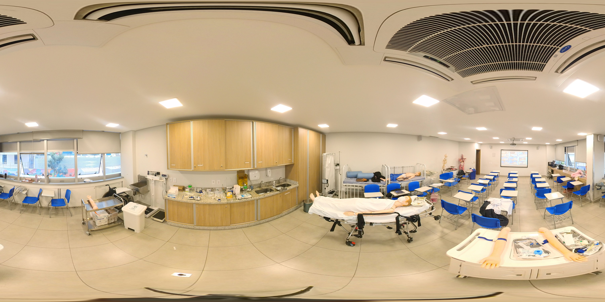

MISSÃO · CONHEÇA SEU AMBIENTE
Um laboratório.
Muitas descobertas.
Explore a sala, conheça os materiais e coloque seus conhecimentos em prática.

Toque nos pontos da fotografia para conhecer os itens. No tour 360°, arraste a imagem para olhar ao redor.
Já explorou a sala?
Descubra os cuidados com o ambiente em seis desafios.
CATÁLOGO DA EXPERIÊNCIA
Itens e materiais
Os itens observáveis no tour e os recursos citados no manual estão identificados separadamente. A foto não permite confirmar modelos, quantidades ou todo o conteúdo dos armários.
Visíveis na sala 102
Citados no manual
Referência para os laboratórios de Saúde, Beleza, Estética e Podologia. A presença de cada recurso nesta sala não foi confirmada.
APRENDA NA PRÁTICA
Missão: laboratório em ordem
MATERIAL DE CONSULTA
Manual de procedimentos
Saúde, Beleza, Estética e Podologia · Revisão 01/2023 · 86 páginas
Se o leitor não aparecer no seu dispositivo, use “Abrir PDF”.